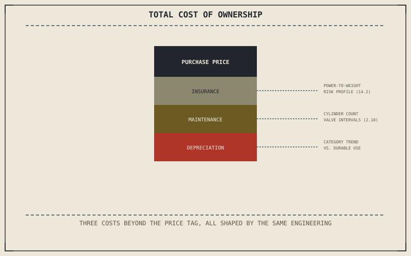

Chapter 15.1 filtered by use and Chapter 15.2 filtered by physical fit. Neither one touches the ongoing financial commitment a purchase actually represents, and Chapter 13.5 already showed that a sticker price is rarely the real cost of a decision — the same lesson applies to buying the whole motorcycle, not just modifying one already owned.
Chapter 15.2 closed by pointing here: from physical fit to the ongoing financial commitment a purchase actually represents. This chapter is that accounting.
Insurance and Category Risk
Insurance premiums vary meaningfully by category, and that variation traces directly back to the engineering trade-offs Part XIV described rather than to arbitrary pricing. Chapter 14.2's sportbike, built around cornering performance and a favourable power-to-weight ratio, is statistically associated with a different risk profile than Chapter 14.1's standard or Chapter 14.3's cruiser, and premiums reflect that difference before a single mile is actually ridden — a real, ongoing cost tied to the category choice Chapter 15.1 narrowed toward.
Maintenance Costs Tied to Engineering, Not Just Category
Chapter 2.10 already established that cylinder count shapes an engine's character, and it also shapes maintenance cost directly — a four-cylinder engine has four valves' worth of adjustment intervals where a V-twin has two, a genuine cost difference tied to the same engineering choice Chapter 14.3 described a cruiser making for torque character rather than maintenance economy. Chapter 14.8's electric motorcycle removes oil changes and valve adjustments from that accounting entirely, exactly the kind of problem Chapter 14.8 already said an electric powertrain simply doesn't have, while introducing an eventual battery-replacement cost combustion motorcycles never face.
Insurance, maintenance, and depreciation are shaped by the same engineering trade-offs Part XIV described in detail — a sportbike's power-to-weight ratio, a V-twin's cylinder count, a battery's eventual replacement — which means the real cost of ownership was already implicit in the category chosen back in Chapter 15.1.

A diagram showing the total cost of ownership as purchase price plus insurance, maintenance, and depreciation, each shaped by the specific engineering trade-offs of the category chosen rather than an independent, arbitrary cost.
Depreciation and Resale Value
A motorcycle bought for the aspirational use Chapter 15.1 warned against and then ridden rarely often loses resale value faster relative to its actual condition, since low mileage on a specific, trend-driven category doesn't always translate into stronger resale the way it might suggest. Categories built around durable, well-understood use cases — Chapter 14.1's standard, Chapter 14.4's touring motorcycle — tend to hold value more predictably than a category chosen primarily for a look or a moment's enthusiasm rather than the sustained use Chapter 15.1 asked a rider to name honestly.
A Common Misconception, Cleared Up Early
It's a common assumption that the purchase price is the real cost of owning a motorcycle, with insurance, maintenance, and depreciation treated as minor details to sort out later. Over a few years of ownership, those three costs combined can exceed the purchase price itself, and each one was already shaped by the category choice made back in Chapter 15.1 — the real cost of ownership isn't a separate calculation from choosing a category, it's a direct consequence of it.
Where This Leads
Chapter 15.4 turns to a related but distinct decision next: new versus used, and the different set of risks each path actually carries.
Key Concepts to Remember
- Insurance premiums track the same engineering risk profile Part XIV described for each category, not arbitrary pricing.
- Maintenance cost is shaped directly by engineering choices like cylinder count, and an electric powertrain removes some maintenance items entirely while adding an eventual battery cost.
- Insurance, maintenance, and depreciation combined can exceed the purchase price over a few years of ownership.
Cross-References
| ← Ch. 2.10 | Established cylinder count shaping engine character; this chapter treats that same choice as directly shaping maintenance cost. |
| ← Ch. 14.8 | Established an electric powertrain as removing some problems entirely while introducing new ones; this chapter applies that same framing to maintenance cost. |
| ← Ch. 13.5 | Established that a modification's real cost isn't just its price tag; this chapter applies the same honest accounting to buying a whole motorcycle. |
| → Ch. 15.4 | Covers new versus used, and the different set of risks each carries. |